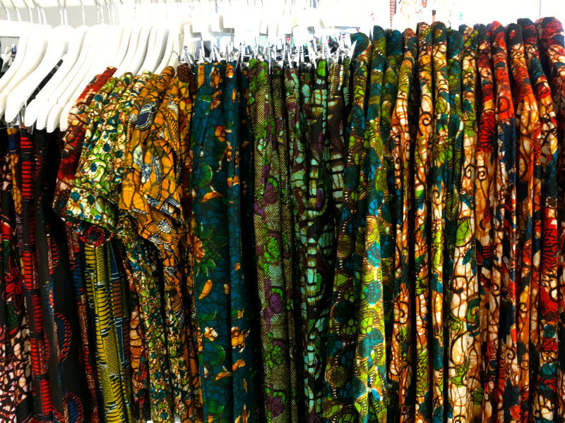

Ifahamu KITENGEapp
Ukurasa ambao umetengenezwa makusudi kwa dhumuni la kuwakutanisha
Mafundi Nguo Aina ya VITENGE na Muhusika wa Nguo.
Hii itasaidia kupunguza au kuondoa kero mbalimbali za Mafundi Nguo.
ikiwa ni pamoja na kushonewa Nguo yako vibaya,
Kuchelewa kwa muda wa ukamilikaji wa Nguo, Nguo kupotea n.k
Inatoa Ajira na Fursa ya kuonyesha Vipaji vya Ushonaji
kupitia Mafundi wetu waliosajiliwa katika Vitengo Mbalimbali.
KITENGE tunatoa huduma ya kushona mishono mbalimbali kwa rika la Watu wazima,
Vijana na Watoto.., Kuuza VITENGE vizuri na
Huduma ya Ushauri juu ya Nguo yako kwa namna gani ungependa nguo yako ishonwe.
KARIBUNI SANA